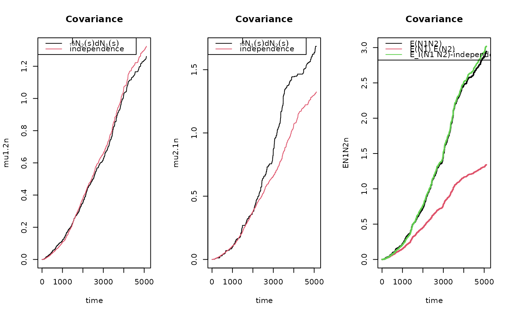

R/recurrent.marginal.R
covarianceRecurrent.RdEstimation of probability of more that k events for recurrent events process where there is terminal event
covarianceRecurrent( data, type1, type2, status = "status", death = "death", start = "start", stop = "stop", id = "id", names.count = "Count" )
| data | data-frame |
|---|---|
| type1 | type of first event (code) related to status |
| type2 | type of second event (code) related to status |
| status | name of status |
| death | name of death indicator |
| start | start stop call of Hist() of prodlim |
| stop | start stop call of Hist() of prodlim |
| id | id |
| names.count | name of count for number of previous event of different types, here generated by count.history() |
Scheike, Eriksson, Tribler (2019) The mean, variance and correlation for bivariate recurrent events with a terminal event, JRSS-C
######################################## ## getting some data to work on ######################################## data(base1cumhaz) data(base4cumhaz) data(drcumhaz) dr <- drcumhaz base1 <- base1cumhaz base4 <- base4cumhaz rr <- simRecurrent(1000,base1,cumhaz2=base4,death.cumhaz=dr)#> Warning: collapsing to unique 'x' valuesrr <- count.history(rr) rr$strata <- 1 dtable(rr,~death+status)#> #> status 0 1 2 #> death #> 0 112 2785 373 #> 1 888 0 0covrp <- covarianceRecurrent(rr,1,2,status="status",death="death", start="entry",stop="time",id="id",names.count="Count") par(mfrow=c(1,3)) plot(covrp)### with strata, each strata in matrix column, provides basis for fast Bootstrap covrpS <- covarianceRecurrentS(rr,1,2,status="status",death="death", start="entry",stop="time",strata="strata",id="id",names.count="Count")